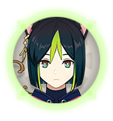
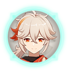
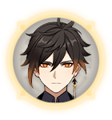

Lexique :
Les classes :
DPS : Le personnage de l'équipe qui vas être chargé de faire des dégats à l'adversaire.
exemple :

Sub-DPS : Le personnage qui vas être chargé d'épauler le DPS en attaquant alors que le DPS recharge une attaque par exemple.
exemple :

Support : Le personnage qui vas poser des effets de zone ou des boosts de statistiques avant de faire attaquer le DPS.
exemple :

Healer : Le personnage qui vas permettre de faire soigner son équipe sans devoir utiliser de nourriture ou aller aux statues de 7.
exemple :

Tank : Le personnage qui vas être en charge de prendre les dégats des attaques inesquivables.
exemple :
